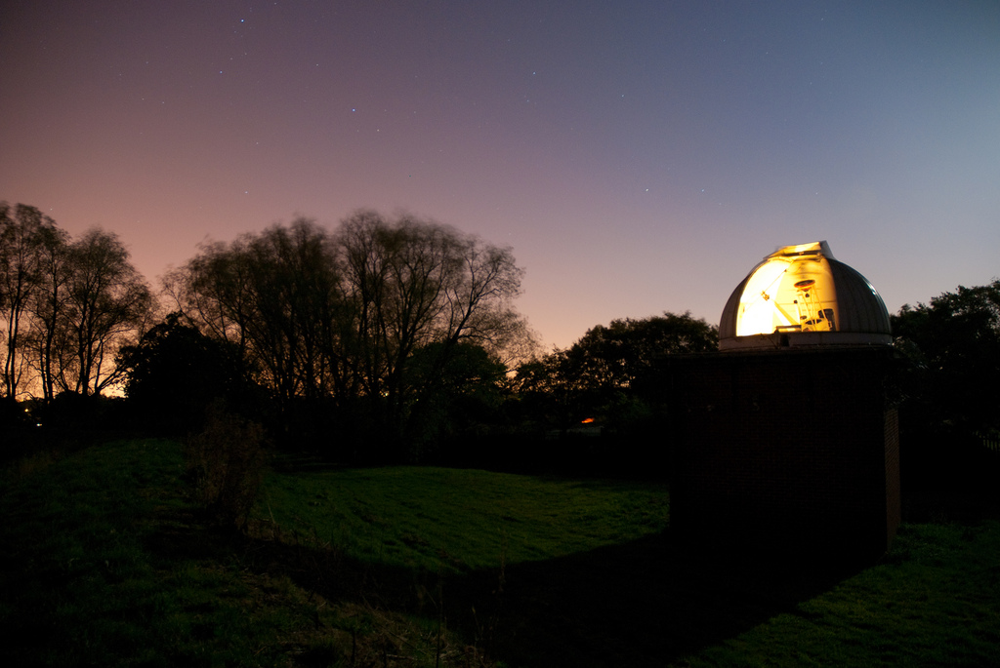

The Wast Hills Observatory
 Telescope: The University of Birmingham Observatory The University of Birmingham's own observatory was established in 1982 as a teaching laboratory for undergraduate students in physics and astronomy. Today, students use the observatory as part of several laboratory courses in the undergraduate degree programme. Situated in Kings Norton, just 8 km away from the University campus, the observatory is easily accessible. As a result, the University also hosts Astronomy in the City several times throughout the year, where the public (yes, you ) can join us for stargazing, listen to talks from our expert astronomers, and ask any question you ever wondered about astronomy. Note that objects in the Infrared wavelengths will not be visible from here. Radio wavelengths on the other hand are not affected at all from cloudy weather, but the observatory does not have a radio telescope on site. There is a single telescope with a 50-cm diameter mirror, and the primary instrument is an imaging camera that can take pictures in broadband optical light, or using the B, V, R, I filters. Unfortunately, the UK is not known to be have the best weather, so you might have to wait for a couple of weeks to get your observation. Despite the avert weather conditions, small observatories such as this one make regularly contributions to astronomical research. An example is the discovery of a bright Supernova in the nearby galaxy M82 by students observing at the London Observatory in 2014.You guys seem cool, Birmingham it is!
Hmmm...let me see the other options